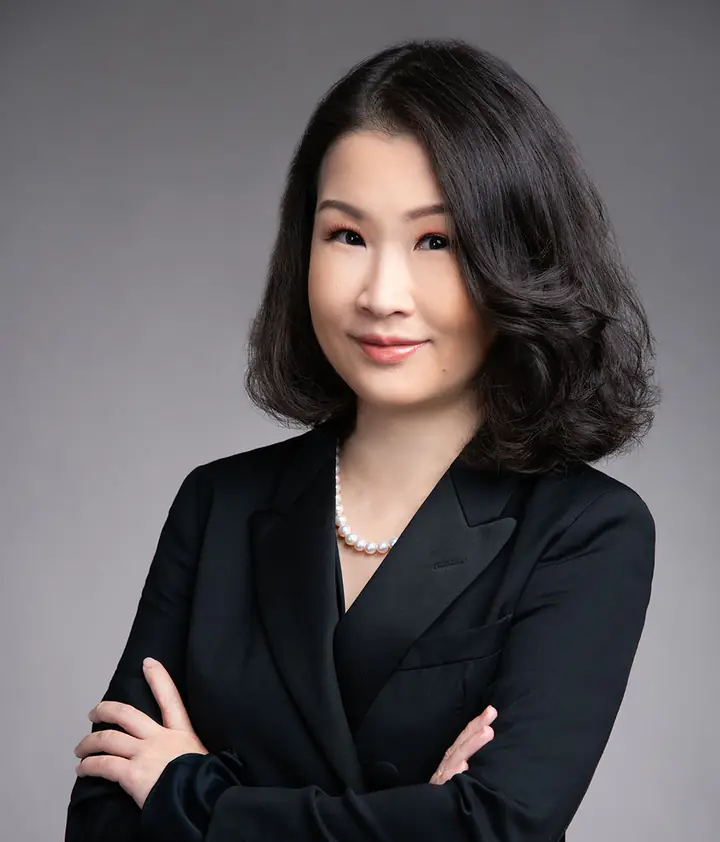

Our people / Founder
Vera Tan.
Founder & Managing Partner
VAM Advisory Limited
Legal understanding.
Financial-market experience.
A practical business perspective.

Background
A career connecting
law and business.
Vera has more than 25 years of experience in legal and banking. She is the Founder and Managing Partner of VAM Advisory Limited.
She graduated with an honours law degree from University College London and received a Bentham Prize for High Achievement. She was called to the UK Bar and Hong Kong Bar in 2001 and practised as a barrister in Hong Kong until 2005.
Her subsequent career has included financial markets, asset management, investment and compliance roles. This combination of experience supports VAM’s work across commercial documentation, regulatory frameworks and business operations.
Professional experience
Across legal, finance
and compliance.
VAM Advisory Limited
Founder & Managing Partner
Business, legal, operations and compliance consulting.
Goldman Sachs Asia
Former Executive Director, FICC
Sales and trading across different financial-product asset classes.
Deutsche Bank
Former Head of Hong Kong Global Markets Debt business lines compliance
Compliance leadership for the Hong Kong business lines.
Everbright SHK
Former Managing Director
Proprietary investment, co-investment, private equity and structured finance.
CMSC Partners Limited
Former Responsible Officer & Managing Director
Asset management.
AGBA Acquisition Limited
Former Chief Financial Officer
Nasdaq-listed special purpose acquisition company which subsequently completed a merger.
Selected current and former roles, as described in VAM’s 2026 capability presentation. Former roles are background experience, not current affiliations.
A practical next step
Let’s talk about
your business.
Tell us what you need to resolve, improve or put in place.
Start a conversation